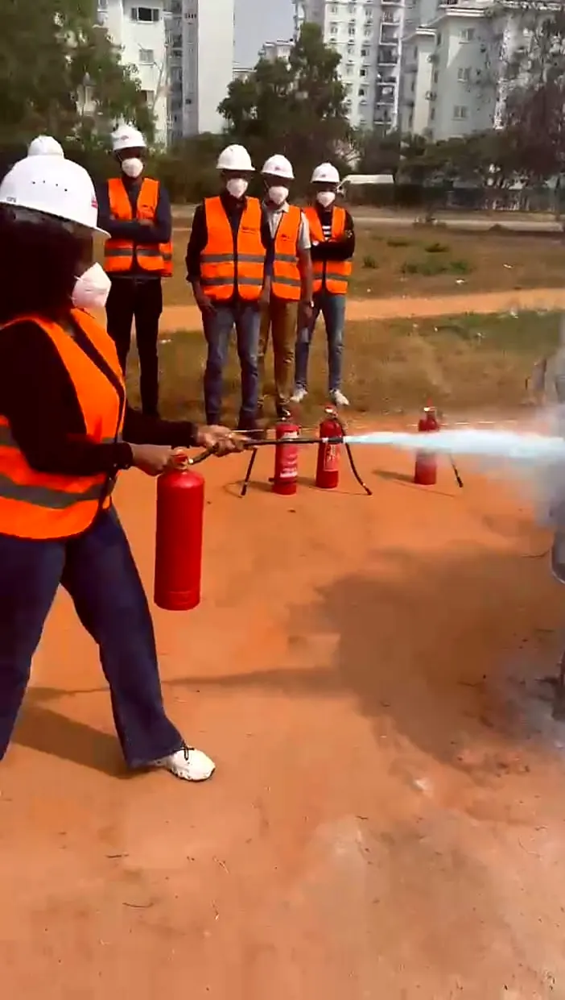

Gestão de Risco Ocupacional · Luanda
Formação prática com fogo real, inspeção de extintores e gestão de risco para empresas que levam a vida a sério.
01 — Quem somos
Somos uma equipa multidisciplinar que transforma a forma como as empresas lidam com o risco — unindo conhecimento técnico, inovação e compromisso ético para criar ambientes de trabalho mais seguros, produtivos e humanos.
02 — Serviços
03 — O que ensinamos
Técnica P.A.S.S. — aprendida com fogo real, não em slides.

Quebrar o selo e libertar o manípulo — com calma e postura segura.
O jato vai para a base das chamas, nunca para o topo do fumo.
Pressão contínua e controlada, mantendo a distância de segurança.
Movimento em leque até o foco estar extinto — e vigiar a reignição.
04 — No terreno
Deslize →
05 — Contacto